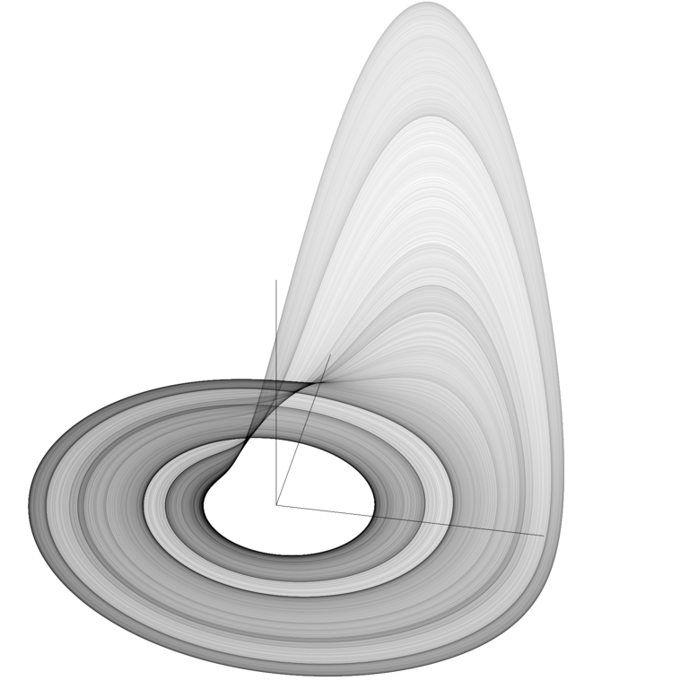
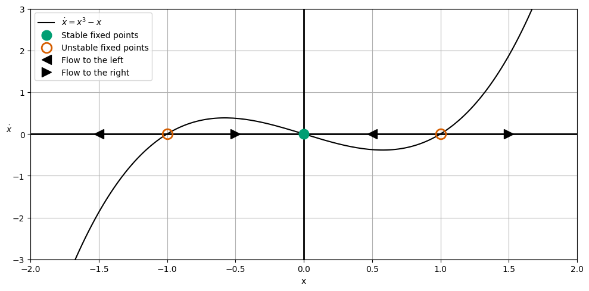

Day 18 - Introduction to Nonlinear Dynamics#
Rössler Attractor#

There are no crossings of the path shown in this picture#
Announcements#
Midterm 1 is due Oct 10th
Seminars this week#
MONDAY, October 6, 2025#
Condensed Matter Seminar 4:10 pm,1400 BPS, In Person and Zoom, Host ~ Tyler Cocker Speaker: Edoardo Baldini, University Texas - Austin Title: Nonlinear Coupled Magnonics Zoom Link: https://msu.zoom.us/j/93613644939 Meeting ID: 936 1364 4939 Password: CMP
Seminars this week#
WEDNESDAY, October 8, 2025#
FRIB Nuclear Science Seminar, 11:00am., FRIB room 1300 and online via Zoom. Speaker: Dr. Yuhu Zhai of Princeton Plasma Physics Laboratory Title: Innovation in superconducting magnet technologies: R&D Gaps and opportunities to mature HTS for fusion and other applications Join Zoom: https://msu.zoom.us/j/96657965451?pwd=Isaf23sK5agzaao0Kwaei7AaWHkc4W.1 Meeting ID: 966 5796 5451 Passcode: 479842
Seminars this week#
WEDNESDAY, October 8, 2025#
Astronomy Seminar, 1:30 pm, 1400 BPS, In Person and Zoom, Host~ Speaker: Kyle Kremer, UC San Diego Title: Globular Clusters: Astronomical factories of gravitational-wave and electromagnetic transients Zoom Link: https://msu.zoom.us/j/94228252584?pwd=zNJdjCNAabNkppOcg5FlAv01ihzLwl.1 Meeting ID: 942 2825 2584 Passcode: 541987
Seminars this week#
THURSDAY, October 9, 2025#
Colloquium, 3:30 pm, 1415 BPS, in person and zoom. Host ~ Xing Wu Refreshments and social half-hour in BPS 1400 starting at 3 pm Speaker: Benjamin Jones, University of Texas at Arlington Title: Single Barium Ion Identification Technologies for Background-Free Neutrinoless DoubleBeta Decay searches - Zoom Link: https://msu.zoom.us/j/94951062663 Password: 2002 Or complete link: https://msu.zoom.us/j/94951062663?pwd=c48uM25P9UsRVuR74rkOioOWgpoxgC.1
Seminars this week#
FRIDAY, October 10, 2025#
QuIC Seminar, 12:30pm, -1:30pm, 1300 BPS, Zoom only Speaker: Daniel Nino, Xanadu Title: Quantum Computational Chemistry (With Pennylane) Full Scheule is at: https://sites.google.com/msu.edu/quic-seminar/ For more information, reach out to Ryan LaRose
Seminars this week#
FRIDAY, October 10, 2025#
FRIB IReNA Online Seminar, 2:00pm., Eastern Time. Hosted By: Hosted by: Borbala Cseh (Konkoly Observatory) Speaker: Artemis Spyrou, MSU Title: Neutron-capture reaction constraints for astrophysical processes Please see website for full abstract. Please click the link below to join the webinar: Join Zoom: https://msu.zoom.us/j/827950260 Meeting ID: Passcode: JINA
Reminders: Conservative Forces#
The curl of a conservative force is zero
Work done by a conservative force is path-independent
Work done by a conservative force around a closed path is zero
Reminders: Conservative Forces#
The work done by a conservative force is equal to the negative of the change in potential energy
A conservative force can be expressed as the gradient of a scalar function
Reminders: Equilibrium (aka Critical or Fixed) Points#
We found equilibrium points by setting the derivative of the potential energy to zero:
We then determined if these points were stable or unstable by looking at the second derivative of the potential energy:
Relationship to Differential Equations#
By setting \(\frac{dU}{dx} = 0\), we are finding the equilibrium points where the force is zero,
If we consider the typical form of a differential equation,
We can see that we are seeking the points where the differential equation is zero,
This approach is a powerful way to understand the behavior of a system. And we can do so geometrically!
Clicker Question 18-1#
Let \(\dot{x}=\sin{x}\). Set up the integral that could be used to solve for \(t(x)\).
\(\int \frac{dx}{\sin{x}}\)
\(\int \frac{dx}{\cos{x}}\)
\(\int \frac{dx}{\tan{x}}\)
\(\int \frac{dx}{\cot{x}}\)
???
Clicker Question 18-2#
We can integrate this with \(x(0)=x_0\) to find \(t(x)\):
Find \(x(t)\)? 🤢🤢🤢
Instead find the equilibrium points (\(x^*\)) of the system. \(n\) is an integer.
\(x^*=0\)
\(x^*=0, \pm\pi\)
\(x^*=\pm\pi/2\)
\(x^*=n\frac{\pi}{2}\)
\(x^*=n\pi\)
Clicker Question 18-3#
Sketch the differential equation \(\dot{x} = \sin{x}\) in the phase space \(x\) vs. \(\dot{x}\).
Note where the plot crosses the \(x\)-axis. These are the critical/equilibrium points, \(x^*\). Identify the critical points.
By definition, \(\dot{x} > 0\) is a “flow to the right” and \(\dot{x} < 0\) is a “flow to the left”. Sketch the direction of the flow - this should only appear in the \(x\)-axis.
Look at the flow directions and the critical points. What can you say about the stability of the critical points? We use closed circles for stable points and open circles for unstable points. Add these to your plot.
Click when you and your table are done.#
Phase Space Diagram for \(\dot{x} = \sin{x}\)#

Clicker Question 18-4#
Consider now the differential equation \(\dot{x} = x^3 - x\). To find \(t(x)\), we can integrate:
That yields the following solution (🤢🤢🤢):
Find the equilibrium points (\(x^*\)) of the system.
Sketch the differential equation \(\dot{x} = x^3 - x\) in the phase space \(x\) vs. \(\dot{x}\).
What can you say about the stability of the critical points? Add these to your plot.
Click when you and your table are done.#
Phase Space Diagram for \(\dot{x} = x^3 - x\)#

The Harmonic Oscillator Gets a Bad Rap#
The SHO is a linear system. It’s boring. It’s predictable. It’s stable. But it can help us understand nonlinear 2nd order ODEs and thus more complex systems.
Consider the physical pendulum. The equation of motion is
Or more simply:
In the case of small angles, \(\sin{\theta} \approx \theta\), and we have a linear system.
Examples of SHOs#
The spring-mass system \(\ddot{x} = -\omega^2 x\)
The simple pendulum \(\ddot{\theta} = -\frac{g}{L}\theta\)
The LC circuit \(\ddot{q} = -\frac{1}{LC}q\)
Water in a u-tube \(\ddot{h} = -\frac{2g\rho A}{M}h\)
A jump rope \(\ddot{u} = \frac{T}{\lambda}\left(\frac{n\pi}{d}\right)^2 u\)